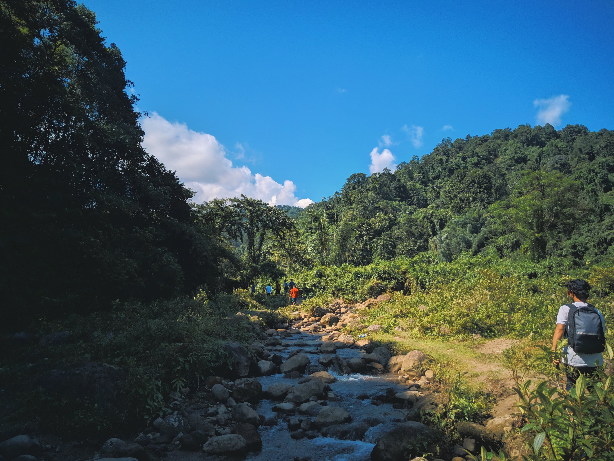

Hi there, I am Shikhar
When I'm not caught up in the hustle and bustle of work, I really like to travel to explore. I like surrounding myself with nature, there's something magical about being surrounded by nature. Whether it's a serene hike in the forest, camping under a starlit sky, or simply taking a leisurely stroll in the park, the beauty and tranquility of the natural world makes me alive. The rustling leaves, the scent of wildflowers, and the chirping of birds create a symphony that soothes my soul and reminds me of the wonders that exist beyond the concrete jungle.



And when I can`t travel, I just get lost in the world of Anime. Anime and Animation movies/sereis have always felt like home, one of the reason behind learning Blender so that maybe I can also create my own anime in the future (Fingers crossed). Naruto and Black Clover hold a special place in my heart and how can I forget Wall-e, as I've grown alongside their protagonists, sharing their triumphs and shedding tears during their emotional journeys. Anime has a unique way of sparking my imagination and teaching valuable life lessons, making it an integral part of my downtime.
I am also a massive football fan, the adrenaline rush of watching football is unparalleled and my heart beats for the beautiful game and my club, Real Madrid. Cheering for Real Madrid, fills me with excitement and joy. The countless good memories that this game and this club has given me is something that I will always remember. Football and Real Madrid has always been there for me, helped me over come so many tough days and I will always be grateful for that. Hala Madrid Y nada Mas!!

I was also a part of the U17 World Cup back in 2017. Try and spot me

I am a family man at the end of the day, my family holds a special place in my heart. With a younger sister, an elder brother, and our incredible dad, our home is always filled with laughter, support, and occasional friendly banter. Through thick and thin, we navigate life's ups and downs together, creating memories that are treasured forever. Their unwavering love and encouragement are the foundation that allows me to embrace myself and pursue my passions with confidence.
As I flip through the pages of my life so far, I'm reminded of the joys and passions that make me who I am. From exploring new horizons and growing each day as a person and challenging myself to be better than the day before, each aspect of my life adds color and excitement to my journey. I will keep updating this journal.. (Hopefully)
Leave a comment